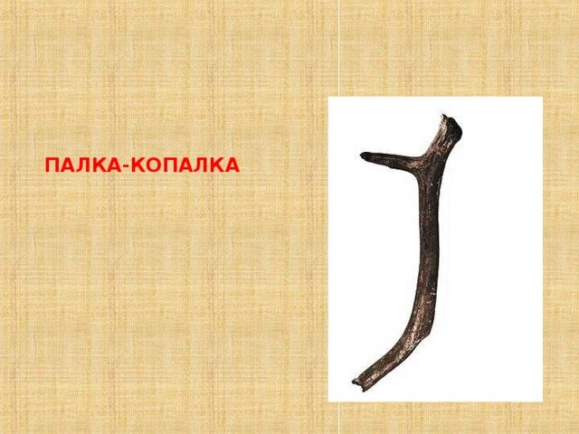

Чермен Макиев - человек обЪединивший асгард и древнюю спарту. На сегодняшний день люди помнят о нем, как о человеке, который изменил ход Великой битвы за станцию метро "Парк Культуры". Но кто же он на самом деле?
Чермен Макиев известен тем, что он поистине разносторонний человек. Именно про него была сказана известная всем цитата "талантливый человек - талантлив во всем". И вот одни из основных его качеств и умений:
Это лишь одни из немногих его умений, если начать перечислять все, то вся нашла планета начнет идти по своей оси задом наперед и время пойдет вспять.
По мнению ученых Чермен, как и все живые существа вышли из воды в ходе эволюции. Но известно ли вам откуда вообще взялась вода? На этот счет давайте обратимся к словам известного научного деятеля, который в 2022 году удостоился Нобелевской премии в виде наушников AirPods. Вот, что он говорил: "Макиев Чермен - уникальное существо когда либо существовавшее во Вселенной. Он обладает теми навыками, которыми не обладал даже сам Артем Лобов в свои лучшие годы, и это поистине удивительно! Чермен, насколько мы знаем вылез из воды, но задумывались вы откуда взялась эта вода? Я задумывался. Но я сам не знаю..." - говорил Махмудов Махмуд.
Получается нам ничего неизвестно о нем? Как бы не так. В 774 году до н.э. были созданы орудия труда, напоминающие Чермена Макиева. Теория Хачатряна Артура гласит, что древние люди считали его Богом и такие орудия убивали в 118 раз эффективнее мамонтов.
Также в ходе экспериментов с сыром и мышей ученые смогли выяснить, что именно Чермен Макиев создал сыролюбящую девицу, которую археологи прозвали "Станислава". Причиной такому имени и произвищу стали раскопки, в ходе которых нашли грудастую девицу в обнимку с пармезаном.
На данных момент это все, что известно науке о Чермене...
Не смотря на всю его скрытность и недружелюбность к простым людям, он все же дал несколько советов человечеству